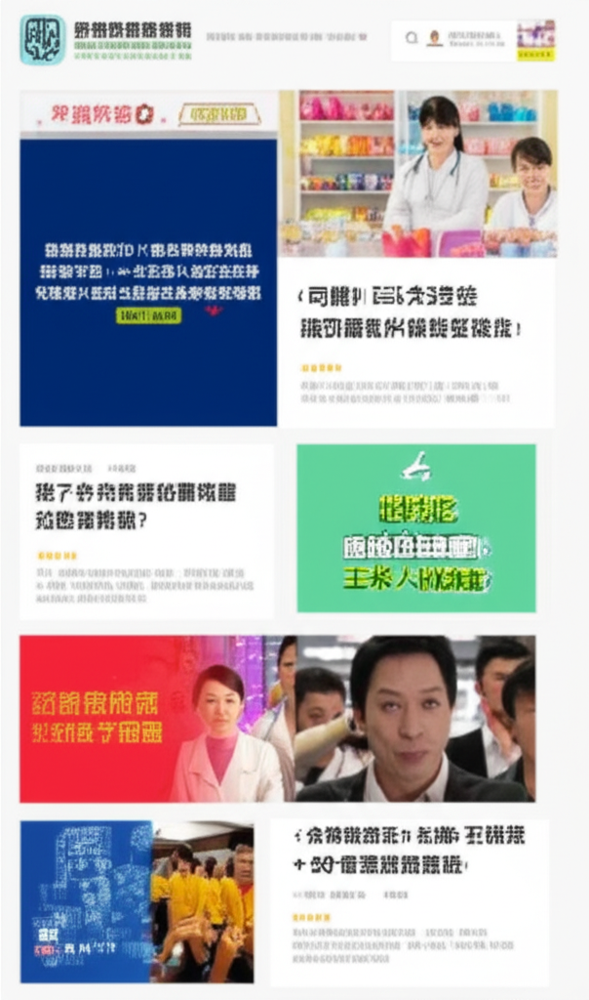

# 近期健康與新聞焦點：高血壓、失智症與生活習慣
## 引言
近期新聞與健康資訊廣泛涵蓋了高血壓管理、失智症照護、健康飲食習慣以及其他突發醫療事件。本文將整理這些資訊，重點關注高血壓的控制、與失智症患者的溝通技巧以及維持健康的相關建議，希望能為讀者提供實用的健康知識。
## 主體內容
### 第一點：高血壓的防治與管理
高血壓是現代人常見的健康問題。許多新聞都提到了高血壓的防治和管理。
* **非藥物療法的重要性：** YouTube 影片指出，透過生活方式的調整，例如飲食控制和運動，可以使許多高血壓患者恢復正常血壓，甚至無需藥物治療。
* **飲食建議：** 中時新聞網報導，以藜麥、糙米、地瓜等替代白米作為主食，有助於控制血壓和穩定血糖，對心血管健康有益。
* **血壓監測：** WaCare遠距健康社群強調定期量血壓的重要性，尤其對於剛開始服藥或正在調整藥量的人，建議兩週後再次量測。
* **其他潛在影響：** 台灣高血壓學會提到，改善睡眠品質，也有助於血壓控制。同時，需注意安眠藥等藥物可能對血壓產生的影響。
* **未受控的高血壓：** 新聞觀察網提醒，高血壓降不下來，長期居高不下會影響心血管系統和其他系統的健康，導致產生許多併發症。
### 第二點：失智症患者的溝通技巧
衛生福利部臉書貼文分享了與失智症患者溝通的訣竅。
* **理解病情變化：** 指出語言能力會隨著病情改變，因此溝通方式需要相應調整。
* **提供安全感與尊重：** 強調透過掌握溝通方法，給予失智症患者安心與尊重。
* **實用技巧：** 提供了6個日常溝通技巧，幫助建立更好的互動關係，但具體內容需要在連結中查看。
### 第三點：其他健康與社會新聞
* **男性健康：** 中時新聞網報導了一例30歲男子因包皮過長導致下體發炎的案例，提醒男性注意個人衛生，並控制糖尿病，以減少龜頭包皮炎復發的機會。
* **環境健康：** 龍安國民小學網站提到了台灣即時空氣質量指數，提醒民眾關注空氣品質，維護呼吸道健康。
* **新聞平台：** 大河網新聞中心提供河南地區的即時新聞報導。
* **獨立媒體：** 新唐人亞太電視台提供包括國際、中國、財經等多元新聞內容。
## 結論
近期新聞資訊涵蓋了多個重要的健康議題，從高血壓的預防與管理、失智症的照護，到其他健康風險的提醒，都顯示了健康意識的重要性。透過理解這些資訊，並將其應用到日常生活中，可以更好地維護自身和家人的健康。同時，也建議民眾關注可靠的新聞來源，獲取正確的健康資訊。